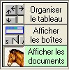
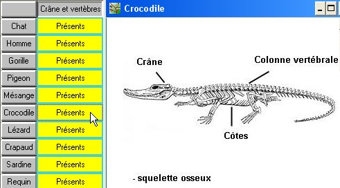

Accès aux documents
Accès aux documents
Accès aux documents
|
Activer le bouton  |
Lorsque le bouton Afficher les documents est enfoncé, un clic sur une case du tableau fait afficher le document correspondant.  On peut ainsi, dans certains cas s'affranchir de l'étape de construction du tableau, tout en conservant la possibilité de visualiser les espèces et les caractères étudiés. |